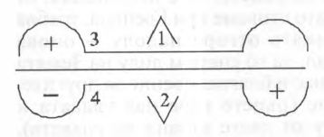

Беседа 3624 от 3877 · Беинса Дуно
Факти, закони, принципи
Отче наш
Духът Божий
Кажи ми Ти Истината
Да направим упражнението: двете ръце успоредни наляво. Дясната се движи по лявата, докато дойде настрани. Лявата пред дясната успоредно. Движи се по дясната, докато дойде настрани.
Знаете ли защо правим тия упражнения? В лявата страна имате пет числа, които са отрицателни, и в дясната имате пет числа, които са положителни. Тези числа са проводници на известни сили в Природата. Гледайте по-хармонични да бъдат движенията. Не само да направим движенията. Ръцете да бъдат хоризонтално, не да бъдат наведени надолу. Това е Божествено състояние. Ръцете надясно. Започнете от дясната страна да поемате въздух. От лявата ще издишате. Ръцете наляво. Сега от лявата страна възприемете. (Направихме обливането.) Вие не сте като един оркестър, да се подчинявате на един закон, подчинявате се на много закони. Разни команди имате. Не се подчинявате на една команда. Някои се подчиняват на командата на стомаха, някои – на сърцето, някои – на ума си. Сега една команда да имате. (Правим пак обливането.)
Като движим ръцете отдолу нагоре, значи започваме от материалния свят към Божествения. Туй е еволюция. Отгоре надолу движението на ръцете, то е инволюция, от Бога към Земята надолу. Като отиваме при Господа, трябва да занесем нещо. Движенията отгоре надолу – онова хубавото, което Бог ни е дал, да го снемем долу на Земята и да бъде благословение за нас и благословение за другите. Като правиш туй движение (ръцете горе над главата и движение на ръцете надолу от двете страни на главата), Бог, Който ти е дал да го снемеш на Земята, полека да го не изгубиш! После каквото си придобил от Земята, ще го занесеш на Господа.
Като седнете вкъщи, да имате една свещена идея. Седнете сега. Сега трябва да разбирате. Ние в живота често сме заети с неща, които нямат нищо общо с живота. Седиш някой път, човъркаш окото. Трябва да има известни причини. Или някой път хванеш носа, дърпаш го, не знаеш защо. Някой път дърпаш устата или буташ лакътя, или гърба си – има си причини. Който не знае, той бута гърба си. Всяко нещо има своя причина.
Ние сме обусловени от три неща: от факти, от закони, от принципи. Що е факт? Един факт е резултат на един закон. Що е закон? Резултатът на един принцип. Що е принцип? Проявление на Бога. В света принципите създават законите, законите създават фактите, а фактите създават условие за самия живот. Тия факти могат да бъдат статически, временни. Един факт: направена е една врата. Вратата е факт. През този факт трябва да влезеш. Ако не искаш да се подчиняваш, ще обикаляш навсякъде. Трябва да отвориш тази врата, да влезеш. Факт е, че има една врата. Защо има една врата? Защото се отваря и защото се затваря. Понеже тази врата е собственик на едного, който владее тази къща, той има право, като влезе, да затвори вратата. Като излезе, да отвори и да затвори вратата. Два пъти я отваря, два пъти я затваря. Като влиза я отваря и затваря; като излиза, я отваря и затваря. Значи, ако вън излиза, имате плюс и минус; после имате минус и плюс.

Казвам: стомахът е един факт. Биенето на сърцето е един закон. Мисленето на ума това е принцип. Каквото става в ума, такъв закон се образува в сърцето. Каквито закони съществуват в сърцето, такива факти, резултати ще имате в тялото. Ще те боли кракът, коляното. Защо ви болят колената? Има един ъгъл на коляното, щом свиеш коляното, показва, че трябва да дадеш нещо. Щом кракът е на земята прав, нищо няма да даваш. Тръгнеш на път, какво казваш? Дигнеш крака си, свиеш го – то е даване. Ще добиеш известна енергия. Ако си дигнал левия крак и си го свил в коляното, предаваш енергия на левия крак; когато свиеш левия, предаваш на десния – та краката си предават. Ти казваш: „Защо се свива кракът?“ Ако не свиваш левия и десния крак, не можеш да ходиш. Свиваш ръката. Ако не свиваш дясната ръка, ще осакатиш лявата.
Защо правим тия упражнения? Те си имат дълбок психологически произход. Казва някой: „Не искам да се упражнявам“ – ти си четеш вече присъдата, „Аз не искам да мисля“ – ти си четеш присъдата, „Не искам да чувствам“ – ти си четеш присъдата, „Не искам да ям“ – ти си четеш присъдата. Ще ядеш, защото Бог е дал яденето. То е факт. Ще опиташ Божиите блага. Ще изучаваш Божиите закони. Ще принасяш придобитото при Божиите принципи, пък те ще те свържат с Бога. Вие имате нос. Никога не сте седнали да мислите защо имате нос, защо Господ го е създал. Защо се е образувал този нос? Толкоз работа свършва носът. Я да се запуши носът. Когато се запуши носът, човек не е в здравословно състояние. Щом носът ти започва да се запушва, ти си изпортил нещо. Не се наблюдавате. Често запушване става ту на лявата, ту на дясната ноздра. Не всякога човек диша с двете ноздри. Някой път се запушва дясната ноздра, някой път двете. Много хора дишат с устата, но то не е здравословно състояние. Здравословното състояние е, през носа да се диша. Понеже Бог е турил в носа една лигава течност, в която като минава въздухът, филтрира се, и всичките тия твърди вещества, които се носят във въздуха, полепят се по тази течност. После изхвърляш течността навън. Тия жлези, които Бог ги създал, са, да служат на носа, да го държат в меко състояние. Някой път засъхва носът, значи жлезите не работят.
Опасно е, ако човек някой път стане опърничав, започне да не мисли хубаво, да не чувства хубаво, волята му не работи, тази лигава течност не слиза в носа, но в гърлото. Като се набере на гърлото, рече човек да я изхвърли и я глътне. Често стомахът на хората се разваля от техните сокове, които ги ядат. Някой има развален стомах по причина, че тия течности, наместо да мажат носа му, мажат стомаха му. Стомахът не се нуждае от сополски мазнини. Не мажете стомаха със сополи на български или не мажете стомаха с лигавата течност на вашия нос. Трябва да мислите право. Трябва да имате една права мисъл. Трябва да имате едно право желание според закона. Една права мисъл принципална трябва да бъде. Трябва тази мисъл да е дошла от Бога. Трябва да имате едно изправено желание, което да е дошло от света на ангелите. Трябва да имате една изправна постъпка на вашата душа, която е дошла от хората. Постъпките да са от хората. Вие не мислете сега, че сте свободни. Някои от вас мислят, че са много учени. Съвременният свят е толкоз невежа. Всичките учени хора са простаци. Простаци сме ние. Туй, което сега съществува, това не е наука. Това са теории. Да бъдем красиви, защо е? То е един факт. Трябва да бъдеш красив. Та казваме – съвременният свят прогресира. Прогресирал е периодически. Когато в март стане топло в умерените пояси, коя е причината? Земята, която се върти около своята ос и около Слънцето, иде в такова положение, че се изменя ъгълът на падането на лъчите. Зимно време слънчевите лъчи падат полегато, лятно време се изправят. Колкото повече ъгълът става по-близо до перпендикуляра, толкова повече имаме топлина. Ние се движим в пространството. Ти си религиозен човек, седиш и мислиш. Какво положение завземаш в пространството? Какво положение завземаш, трябва да знаеш – в пролетното равноденствие ли си, или в есенното равноденствие. Ако си в есенното равноденствие, ти ще даваш сметка за всичко. Ти отиваш при Бога и ще даваш сметка. Ако си в пролетното равноденствие, ти отиваш на работа. Бог ти е дал нещо, трябва да го приложиш. Може в пролетното равноденствие нищо да не си сял, в есенното равноденствие нищо няма да събираш. Къде ще идеш, какво ще правиш? Българските градинари, които отиват в странство, щом не са спечелили нищо, не се връщат в България. Щом в пролетта са сели в градината, забогатее, ще се върне в дома, донесе нещо на жена си, на децата си. После идната година пак ще се върне за градината.
Та казвам: всички вие сте като градинари. Някой път градинарят не е работил, не може да се върне в дома. Искаш да се върнеш, но за да се върнеш, трябва да носиш нещо. Ние трябва да бъдем богати. Всички казват: „Дано Господ да даде нещо“. То е положение на мързеливите хора. В Бога всичко е непреривно. Неговите блага изтичат и ние всякога трябва да бъдем готови за онова, което ни дават, да възприемем. Не трябва да бъдем всинца религиозни. Аз говоря за даден момент. Като кажа, че не трябва да бъдем учени, то е в даден момент. То е извън времето и пространството. Даден момент не е равен на секунда. Една секунда е доста голяма единица. В една секунда светлината изминава 300 000 км. Значи доста голяма единица. Широчина има на 300 000 км. Туй разстояние, което светлината изминава за една секунда, за колко време ще го измине една биволска кола? Сега трябва да си създадете да мислите разнообразно, научно да мислите. Някой път някои от вас гледам сте уморени. Причините зная. Някой е уморен от Любов. Някой е уморен от обич. Някой е уморен от чувства, някой е уморен от много работа. Три неща има. Фактът може да те умори, не да те умори, но да те отслаби. Туриш едно кило на гърба си, туриш още едно кило – две кила. Представете си, че един факт тежи едно кило, вторият - две кила, десет кила, 15, 20, 30, 40, 50, 60 факта, после 70 факта като ти турят на гърба, ти вече не можеш да бъдеш спокоен. Много факти нас не ни трябват. В даден момент мене ми трябва един факт. В даден случай трябва да зная обичат ли ме, или не. Най-първо аз съм учил. Що е един умен човек? Що е един добър човек? Хамбарът му е пълен с жито. За мене неговият хамбар е един факт. Ако ти от твоя факт може да ми дадеш само един факт, жито може ли да ми дадеш? Като посея едно кило жито, то съдържа 16 000 зрънца. Тия зрънца вземам, че ги посявам. Всяко едно зърно братясва*. По някой път като ги посея на хубава почва, едно зърно дава 40 стръка, образува една колония, 40 класа. Някой път един клас съдържа по 30, някой път 60 зърна, някой път – 100. Турете по 60 зърна, както казва Христос. 16 000 зърна братясват по 40 класа – може да го сметнете. После то е един факт. Един човек, който иска да ме оспорва, трябва да провери нещата. То е теория. Казвате: „Как братясва?“ Ще сееш, ще видиш. Сей едно зърно. Някой път братясва 40, някой път 10, някой път 5. Изобщо, когато земята е хубава, може да братясва. Земеделецът има научни факти, с които може да накара растенията да братясват. Как ще го накараш да братясва? Ще представиш, че условията са много лоши, тогава братясва. Ако му представиш, че всичко може да бъде добро, то не братясва, казва: „Едно е достатъчно“. Ако кажем, че зимата ще бъде много лоша, казвам: трябват 4-5 тона въглища. Казваме: „Много мека ще бъде зимата, един тон ще трябва“. Когато се уплаши житото, братясва. Когато не се уплаши, по един стрък прави, по два. Сега някой път вие сте много умни. От страх сте умни. Като кажем: „Лоши времена“, вие започвате да мислите, че пари трябват. „Тежка ще бъде зимата“, започвате да търсите дрехи. Казват: „Ще дойдат аероплани, бомби ще дойдат“ – хайде в избата. Има неща, които са неестествени. Сега ако си в театър и има аероплани, ще влезеш в подземието на театъра – там ще има друго представление. Двеста, триста слушатели ще се разправят.
Вие ще кажете: „С какво ни занимава“. С какво да ви занимавам. Кaжете: „Кажи ни за оня свят“. Какво да ви говоря за оня свят, когато не знаете тоя свят. Какво ще говоря на една млада мома, която е болна, хилава, стомахът я боли, гърдите я болят, какво ще ѝ говоря за младите момци, за женене. Когато стане здрава, очите, ушите – здрави, засмее се, да може да ходи на хорото, тогава може да ѝ препоръчам някой момък. Но като е хилава, какъв момък ще ѝ препоръчам. Някой път може да излекувам една мома, само като ѝ покажа един момък. Правил съм опити, болни моми съм излекувал, казвам ѝ: „Обърни внимание на този момък“. Тя най-първо е жълта, като започне да го гледа, престава да я боли коремът. По напред не дишаше, сега като го гледа, диша дълбоко. Този момък ѝ дава нещо. Като я види жълта, казва: „Горката, да ѝ дам нещо“. Няма Любовни работи, но съжаление. Той се отваря и тя се поправя. Казва: „Той даде нещо“. Той минава и иска да изпълни Волята Божия. Казва му: „Помогни“. Той помага. Един ден го хване, казва: „Спри се да поговорим малко“. Най-първо само за една минута, после за две, три, пет. Човекът си навел беля на главата със своето добро.
Вчера иде един млад момък и ми носи едно писмо. Аз преглеждам писмото. Казва: „Понеже отвори писмото, ще платиш 200 лв. глоба. Ти нали си ясновидец, трябваше да знаеш какво има“. Казвам: „Право е“. Отивам горе, вземам 200 лв., давам му ги за глоба. Защо съм отворил писмото? Да видя какво има. Туй е факт сега. Сега може да ви дам теория за обяснение, че са 200 лв., значи, аз нося на гърба си 200 оки товар, дадох го на другите. Освободих се. Натоварих него, освободих се. Какво има, че съм пренесъл един товар на друг гръб.
Казвам: всяка идея, която искате да я приемете, опитайте я. Не бързайте. Вие някой път много бързате. Мене в какво ме глобяват? Казват: „Понеже ти си много добър човек и справедлив, съчувстваш, помагаш на хората, аз съм един беден човек, баща ми и майка ми нямат, трябват ми за училище да внеса такса, ти ще бъдеш така добър, да не оставиш да ме глобят и да ме извадят из училището. Плати заради мене 200 лв., да се отвори вратата, да вляза вътре в училището на знанието“. Значи като не отворя писмото, може да не дам; като чета, аз отговарям. Вече е дадено заявление, ти се подписваш. Щом се подпишеш, ти си отговорен. Вие мислите, че сме свободни. Ние не сме свободни. Ние сме в света вързани с три връзки. Най-първо умственият живот ни завързва със света. Имаме един път. Сърцето ни налага друг път, по който трябва да ходим. Душата ни налага друг път. Три пътя, по които трябва да вървим едновременно. Казвате: „Аз мога да правя каквото си искам“. Ти в училището решаваш дадените задачи и ги решаваш според правилата. Ти ще се молиш на Бога, както ти знаеш. Може да се молиш по своему. Всичките хора не се молят по един и същ начин. Двама души не се молят по един и същ начин. Всеки един има особен метод, по който трябва да се моли. Влизаш при един свой приятел, казваш: „Гладен съм“. Ако не е ваш приятел, вие ще му разправяте къде сте бил 3-4 деня, че си нямал хляб, дълги и широки работи ще му разправяш. Но при приятеля си ще се поусмихнеш и ще кажеш: „Гладен съм“. След като се наядеш, ще разправяш къде си ходил, какво си работил.
Вие сте ученици и сте недоволни. То е факт. От какъв закон произтича този факт? Този закон от какъв принцип произтича? Защо си недоволен? Боли те крак. Защо те боли кракът? Щом те боли кракът, ще намериш лекарство. Може причината на болката в крака да е, че си пил студена вода, по-студена отколкото трябва. Тази, студената вода, като влезе, погълне по-голяма топлина, всичките капилярни съдове се свиват; тия около ставите на коляното се свият повече, вследствие на това кръвта не може свободно да мине, прави голям напор върху тъканите на капилярните съдове и ти усещаш болка. Кръвта като минава, прави туй налягане и ти усещаш болка. Ако сърцето ти има малко топлина, капилярните съдове се свиват. Ако сърцето има повече топлина, капилярните съдове се разширяват. Човек трябва да има добро разположение, за да има добро кръвообращение. Трябва да има правилни мисли, хубави мисли, за да има правилно кръвообращение. Мисълта дава правилно направление, движението да върви без препятствие. Чувствата ти и волята ти да бъдат правилни, за да може кръвта да се върне назад в дробовете да се пречисти. Казвам: ние със своята мисъл, със своите чувства и със своята душа, със своята воля урегулирваме кръвообращението, което е едно условие за един здравословен живот. Скараш се със своите. Или в дома двама братя, или две сестри се скарват. Виждам в дома две сестри се скарват, едната снажна, хубава, другата боледува. Зная, че тия две сестри не са в хармонични отношения. Когато двама братя, единият е здрав, другият боледува, отношенията не са хармонични. Сега аз ви казвам неща, които никак не знаете защо стават. Вие трябва да бъдете добри по сърце, за да бъдете здрави. Туй трябва да го знаете. Без доброто сърце човек не може да бъде здрав или не може да има хубаво състояние, не може да има разположение. Вие по някой път лъжете себе си. Като дойде до себе си никаква лъжа! Признай факта, нито го преувеличавай, нито го намалявай. Вземи, че го измери колко сантиметра е – 20, 10 сантиметра. Някои хора гледат преувеличено. Българинът далечните пространства вижда много близо. Питам българина: „Колко има до еди кое си село?“ – „Близо е – казва – няма един хвърлей място“. Пътувам час-два, няма го селото. Може да каже, че е един час път, пък то три, четири часа трябва да пътуваш. Времето не е развито в българина. Българинът много преувеличава. За лошите работи продължава времето, хубавите работи българинът ги скъсява. Казва: „Тази работа лоша, няма край това нещо“. За Доброто казва: „То скоро ще се свърши“. Доброто скоро се свършва според българина, а злото няма край. Преувеличава. Българинът страда един месец от една болест, той разправя, че страдал пет години. Аз зная, че страдал три месеца, а казва, че страдал пет години. Впечатленията от три месеца държи за пет години. Мисли, че ревматизъм има. Той продължава. Три месеца боледувал от ревматизъм. Пет години по 12 месеца, 60 месеца, като извадим три месеца, остават 57 месеца, в които той предполага, че е болен. Вие седите и казвате, че нямате разположение. Казвате: „Да бъдем добри“. Какво се подразбира под думите да бъдем добри? Уредени отношения. Под думата добри трябва да разбираме да урегулираме сърцето. Под думите трябва да бъде благороден човек подразбира – светлина трябва да има в ума. Един добър ум. Добрият ум подразбира, светлина трябва да има. Казваме: „Душа трябва да има“. Този човек воля трябва да има. Под думата воля разбираме сила. Воля, която няма сила, ти ще си навлечеш безпокойствие. Воля без сила – ти ставаш играчка на своята сила. Да имаш сила значи Бог ти е дал право да преодоляваш всичките мъчнотии. Имаш една болка, вложи силата си. Боли ви коляното. Сега какво правите. Аз да ви дам един метод. Вземете една тенджера вода – тия работи са забавления. Боли ви кракът, нямате лекар, ако имате лекар може да ви помогне, но нямате лекар. Вземете една тенджера вода, стоплете я и като вземе пара да излиза, турете коляното над парата, да го бие, да се стопли така 10-15-20 минути. Като се стопли коляното, започваш да ходиш. Най-първо ще залиташ. Направете опит, като ви боли коляното, нищо не е осакатено, ще се разширят капилярните съдове. Става свиване в някои мозъчни центрове. Ти се уплашиш. Гледам тук, когато има тревога по някой път, чувствам страха на всичките. После започват постепенно да се успокояват. Гледам как преувеличават. Казват – 16 аероплана били над Перник, хвърляли бомби цял час. Други казват, че три аероплана били и хвърляли бомби. Пък никой не знае, никой не е бил там. Неща непроверени. Най-после минал един аероплан, хвърлил позиви. Кое е вярно, не е проверено.
Ум ни е даден. Ти като станеш сутрин, отвори очите си. След като отвориш очите си, спри се и кажи: „Господи, благодаря Ти, че вече мога да приемам Твоята светлина. Пращаш ме на Земята да свърша една работа“. Имаш една добра работа да свършиш. Станеш сутрин, седиш недоволен. Има деца, като станат, започнат да реват, плачат. Внеси в ума си една светла мисъл. Искаш да ядеш. Изправи се, наяж се, поблагодари на Бога, започни работата си. Казвам: каквато и да е работата, не си туряйте юлар. Не казвайте: Чакай да видя, какво трябва да правя. Отвори очите си и благодари на Бога. Свържи се с Бога най-първо, както си свързан с въздуха. Поеми една дълбока вдишка. Детето ти е болно. Кажи: „Детето е болно, ще оздравее“. Българинът казва: „Няма да оздравее“. Ако закъснява да оздравее, кажи: „За Добро е“. Ако продължава да боледува, за Добро е. Детето чрез страданията се възпитава. Всичко в света, което съществува, има свои добри причини само в дадения момент. Един наш приятел ми казваше следния факт: „Аз, казва, всякога като стана сутрин, помоля се на Бога и тогава тръгвам на работа. Една сутрин бързам, нещо ми казва: „Помоли се“. Казвам: „Нямам време, бързам да взема трена“. Него ден, като играли в двора, едно дете изважда окото на неговото [дете]. Помоли се, не бързай по работата, където отиваш. Полека върви, ще свършиш работата. Първо да се свържеш с Господа, да кажеш една хубава дума на Бога е по-хубаво, отколкото да спечелиш целия свят. Ако хамбарът ти е пълен с жито, какво те ползва, ако стомахът ти е развален. По-добре едно кило жито със здрав стомах, отколкото пълен хамбар с развален стомах. По-хубаво една хубава мисъл, едно малко благо в света, една светла мисъл, отколкото да имаш всичките блага, пък умът ти да е объркан.
Фактът вече е завършен процес. Принципът е началото, законът е средището. Фактът е край на нещата. Туй, което дава, от което идат Божиите благословения, е 3 на чертежа. Правата линия показва работата, 4 е това, което приема. Правата линия показва, че трябва да се работи. Правата линия показва правия път. Те са Божии благословения, които ни се дават 3. При четири вземаме. Едното е даване, другото е вземане. 3-то са Божествените работи, които слизат. 4 – това са неща, които възприемаме. Правата линия показва работата, която трябва да свършим. Що е правата линия? Благата, които са дадени от Бога, които трябва да използваме, то е правата линия. Тази права се намира между дадените блага и взетите блага. Правата линия е завършен процес. Щом имаме завършен процес, имаме мир и радост, че сме свършили една хубава работа. Що е права линия? Благо прието от Бога и изработено Добро, то е права линия. Щом при тия блага не туряме ума на работа и сърцето на работа, правата линия не съществува. Тогава се образува такава линия или такава . То е неестествен живот, от който хората страдат, не образуват правата линия. Правата линия е с[ъ]вършена. Има хармония между ума и сърцето. Ние сега се плашим, че гладни ще измрем. Може ли човек при своя приятел да умре гладен? Ние сме чудни хора. Може ли човек при приятеля си, който е богат, да умре гладен. Ако ние обичаме Бога, невъзможно е да умрем гладни, но животът ни ще се поправи. Трябва работа, трябва да изпълним Волята Божия. Сега турям закона така: Волята Божия да бъде ваша воля. Първото, волята, то е факт. Царството Божие е закон. Славата Божия то е принцип в нас. Когато говорим за Името Божие, считам – това са принципите, които управляват света. Когато говоря за Царството Божие, то за мене са законите, които съществуват. Царството Божие има живи закони, живи факти. Те са разумни. Първи по разумност е принципът, втори е законът и на трето място – фактът. Един факт и то е разумно нещо, то не е мъртво нещо, една вещ да я вземеш. Едно нещо като вземеш, то ти говори. Една ябълка ти говори: „Изяж ме! Аз ще ти дам, което никога не си имал“. Направиш едно добро дело, то е факт. Туй дело, тази твоя мисъл, туй чувство, тази добра постъпка на душата ти, ти създават една форма, която е вече жива. Ако ти я възприемеш и комуто да я дадеш, принася полза.
Казвам: благодарете на Бога, че живеете на Земята. Благодарете на сиромашията, която имате. Благодарете, че ви болят краката. Благодарете, че ви боли коремът. Благодарете, че сте здрави. Какво е болката? Болката е Любов. Аз не искам да вярвате. Болката са любящи същества, влезли в тялото и понеже ви обичат, стискат ви. Децата, като обичат ябълките, като влязат в градината, обират ги. Нека се порадват тия деца. Ябълката идната година пак ще даде плод. Туй е едната страна. Човек всякога може да бъде здрав. Болките са потребни като пипер, чер пипер или червен пипер, или малко масълце трябва да има в яденето. Без тях не става хубаво. Болките дават едно хубаво ухание. Без болки животът няма смисъл. Ти някой път не оценяваш живота. Като те заболи кракът, започваш да чувстваш колко хубаво те боли. Като вървиш хубаво, свободен си.
Да сме свободни в нашата мисъл, да няма какво да ни спъва. Да сме свободни в нашите чувства, да няма какво да ни спъва. Да сме свободни в нашата душа, да не се критикуваме. Като се критикуваме, трябва да изучаваме характерите. Казвате: „Той е лош човек“. Какво значи лош? Материалист. Лошото в лошия човек е в ш-то. Уйлям като кажеш, лош човек е. Шекспир е лош човек на физическото поле. Шекспир като описва в какво седят драмите, я виж, как ги описва. Колко находчив е онзи евреин. Нали има една драма. (Шейлок във „Венецианският евреин“.)*
Сутрин като станем, от света на принципите да влезем в света на законите и от света на законите да влезем в света на фактите. Вечерно време от света на фактите, да се качим в света на законите и в света на принципите. Да се образува слизане и възлизане от Бога към законите и от законите към Бога, за да можем да свършим работата. Туй значи да излезем от дома, да се отвори вратата, да се върнем. Има нещо много естествено. Казвам: когато се връщате дома, да бъдете всички богати. Сиромаси да се не връщате.
Една задача ще ви дам. Вземете за една седмица и три пъти на ден наблюдавайте времето какво е сутрин, обяд и вечер. Нали искате научни работи. Наблюдавайте, сутрин какво е времето, на обяд и вечер. Други нека да вземат една задача за една седмица, ако слизате в София, наблюдавайте колко мъже срещате, колко жени, колко деца, колко стари. На каква възраст са. Наблюдавайте отляво, отдясно, колко срещате с бели коси, с черни. Наблюдавайте това за една седмица. За научни работи съберете фактите.
Това е Живот Вечен, да позная Тебе Единаго, Истиннаго Бога и Христа, Когото Ти си изпратил
1ва лекция от Учителя, държана на 23.IХ.1942 г. сряда 5 ч. с., Изгрев.